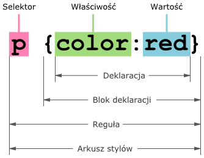

CSS - wprowadzenie
Podstawy stylowania stron: selektory, właściwości, rodzaje CSS
Selektory CSS
Selektor wskazuje elementy, które mają otrzymać styl.
/* Selektor elementu */
p { color: red; }
/* Selektor klasy */
.box { background-color: blue; }
/* Selektor id */
#naglowek { font-size: 24px; }
Więcej informacji o selektorach znajdziesz na stronie o wszystkich selektorach.
Właściwość, wartość, deklaracja
Reguła CSS składa się z selektora, klamry i deklaracji w formacie właściwość: wartość;.
h1 {
color: #2c3e50;
background-color: #f2f2f2;
font-weight: bold;
letter-spacing: 1px;
text-decoration: underline;
}Rodzaje CSS
- zewnętrzny - plik
.css - wewnętrzny - wewnątrz
<style>w<head> - lokalny (inline) - atrybut
style="..."
<!-- zewnętrzny -->
<link rel="stylesheet" href="style.css">
<!-- wewnętrzny -->
<style> p { color: blue; } </style>
<!-- lokalny -->
<p style="color: green;">Tekst</p>Hierarchia stylów
Styl który jest najbliżej danego elementu w html wykrywa, stąd się wzięła nazwa Cascading Style Sheets.
Przykład: p { color: blue; } może zostać zastąpione przez to co jest niżej w stylu, np. .klasa { color: red; } lub #main p { color: green; }.
Arkusz zerujący Meyera to dostępny na internecie zewnętrzny arkusz stylów, który resetuje wszystkie domyślne formatowania każdej przeglądarki.
* {
margin: 0;
padding: 0;
box-sizing: border-box;
}